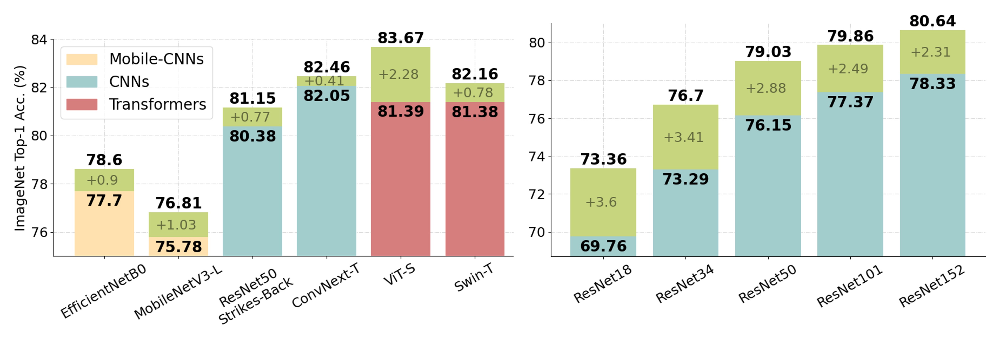

Guy Bar-Shalom
Hi! I am a Ph.D. Student in the Computer Science Department at the Technion under the joint supervision of Haggai Maron and Ran El-Yaniv . My research interests include the application of deep learning techniques to mathematical objects characterized by inherent symmetry structures, with a focus on Graph Neural networks. Additionally, I am focused on estimating uncertainty within these deep learning models.
Previously (Summer 2022), I was a Research Scientist Intern at Google-Verily working with Michael Elad on video analysis.
Selected Publications
* indicates equal contribution

TransBoost: Improving the Best ImageNet Performance using Deep Transduction
Omer Belhasin*, Guy Bar-Shalom*, Ran El-Yaniv
Advances in Neural Information Processing Systems (NeurIPS), 2022
Project Page / Code /
Omer Belhasin*, Guy Bar-Shalom*, Ran El-Yaniv
Advances in Neural Information Processing Systems (NeurIPS), 2022
Project Page / Code /
@InProceedings{belhasin2022transboost,
author = {Omer Belhasin* and Guy Bar-Shalom* and Ran El-Yaniv},
title = {TransBoost: Improving the Best ImageNet Performance using Deep Transduction},
booktitle = {Advances in Neural Information Processing Systems (NeurIPS)},
year = {2022},
}Talks

Neural Scene Representations and Differentiable Rendering
Delft University of Technology, 2022
Slides
Delft University of Technology, 2022
Slides

Implicit Neural Scene Representations and 3D-Aware Generative Modelling
GAMES Webinar Series, 2022
Slides
GAMES Webinar Series, 2022
Slides


Implicit Scene Representations and Neural Rendering
Technical University Munic - AI Lecture Series, 2021
Slides
Technical University Munic - AI Lecture Series, 2021
Slides


Based on Michael Niemeyer's website template.